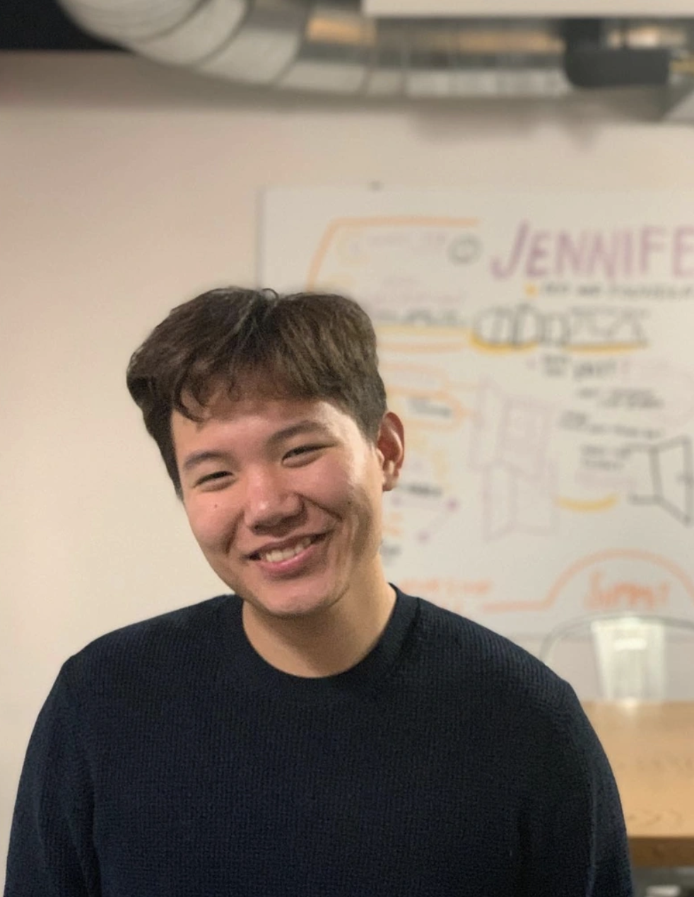
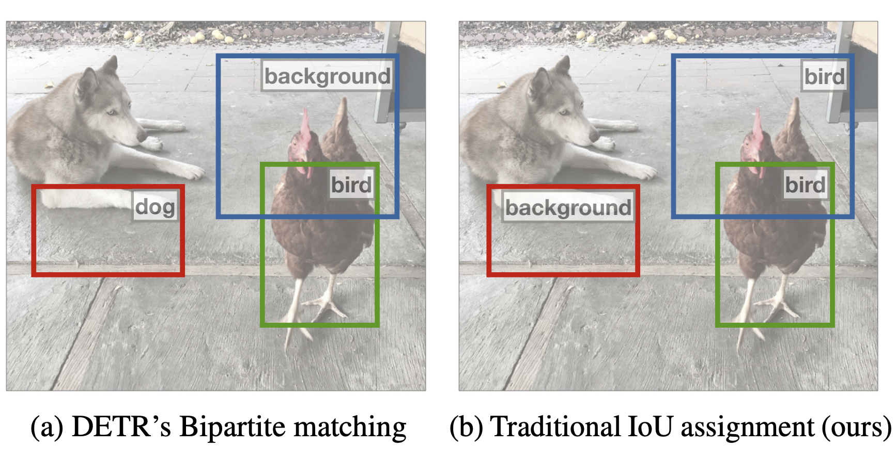
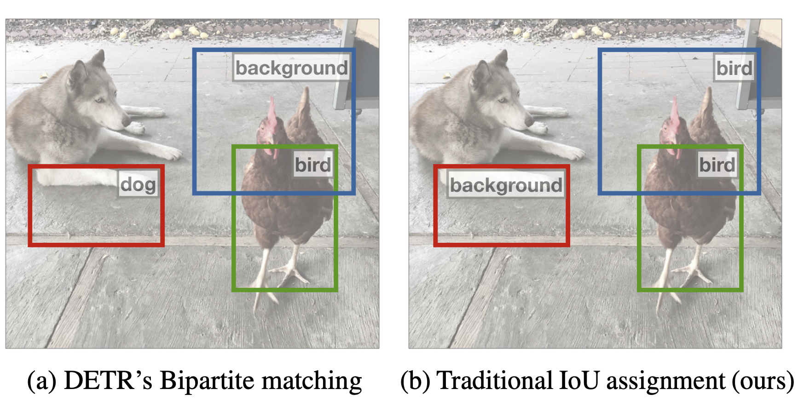
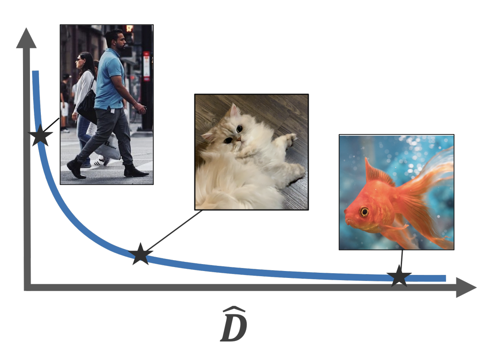
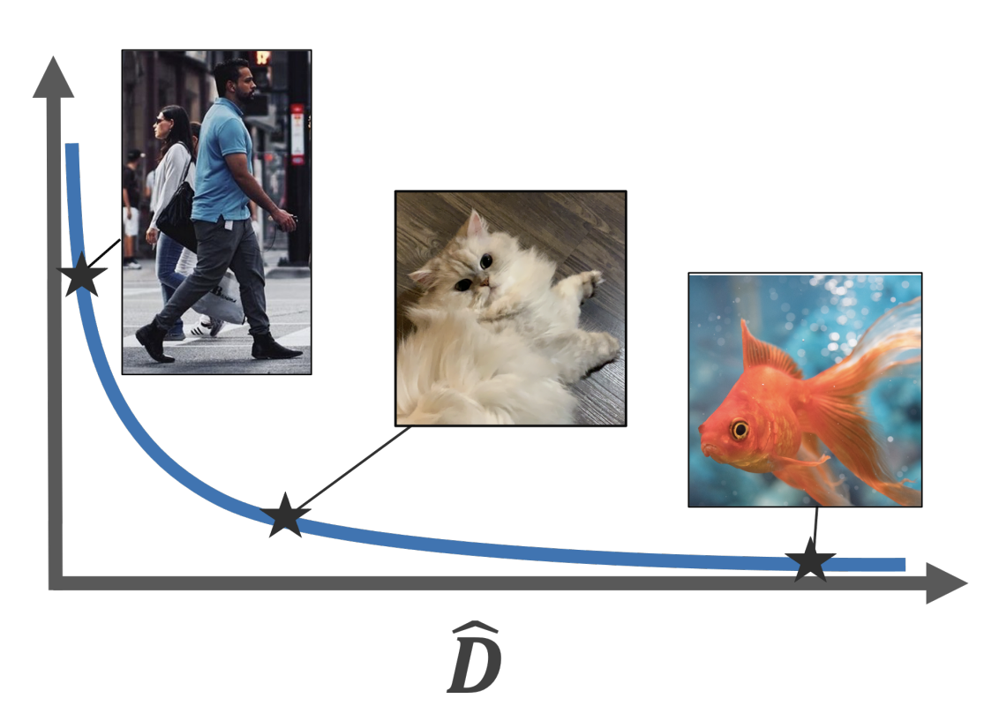
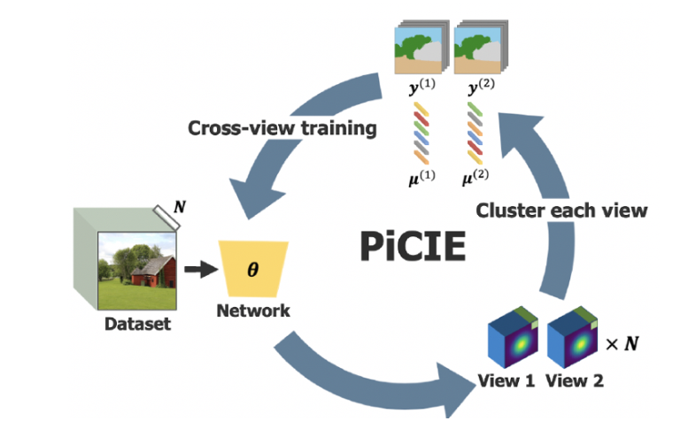
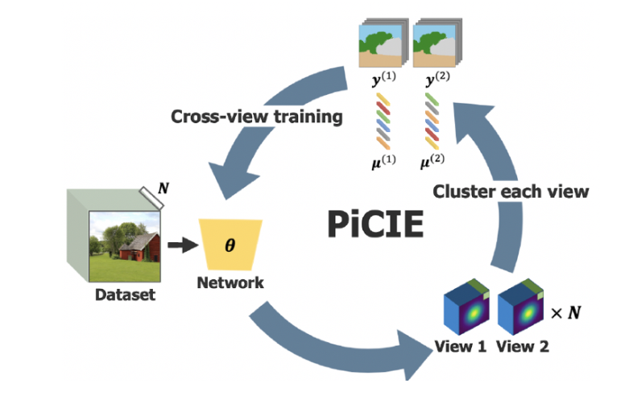

Jang Hyun (Vincent) Cho

My name is Jang Hyun (Vincent) Cho. I am a 4th year CS PhD student at UT Austin, advised by Prof. Philipp Krähenbühl. Before I joined UT Austin, I received BA in CS from Cornell University, where I worked with Prof. Bharath Hariharan and Prof. Kavita Bala.
My research interest is in computer vision, particularly in scaling recognition system (2D, 3D object detection and segmentation). I focus on research topics such as long-tail, large/open-vocabulary detection, and training a unified model for multiple downstream tasks.
(Last updated: Sep. 2023)
News
| Sep 18, 2023 | I joined NVIDIA AV Research as a research intern. |
|---|---|
| Mar 5, 2023 | PartDistillation has been accepted to CVPR 2023. |
| Jul 3, 2022 | ECM-Loss has been accepted to ECCV 2022 as Oral! |
| May 23, 2022 | I joined FAIR as a research scientist intern. |
Publications
CVPR

arXiv


ECCV


Long-tail Detection with Effective Class-Margins
European Conference on Computer Vision, ECCV
2022, Tel Aviv, Oct 23-27, 2022 (Oral)
CVPR


PiCIE: Unsupervised Semantic Segmentation Using Invariance and Equivariance
in Clustering
In IEEE Conference on Computer Vision and Pattern Recognition, CVPR
2021, virtual, June 19-25, 2021